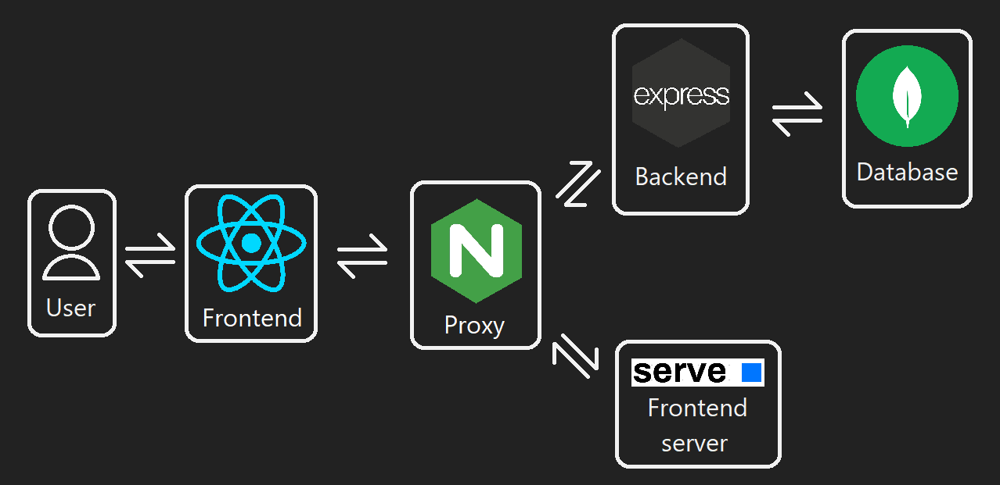
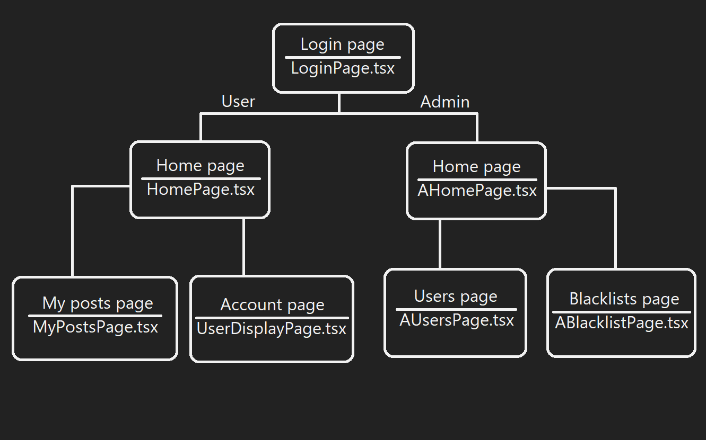
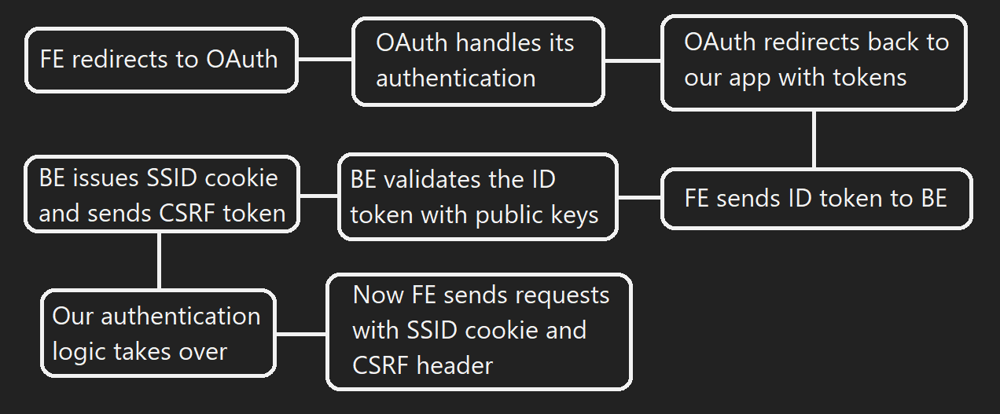

Various flows of the application
Application flow

- The user visits
domain.comand is given the React FE by serve - The user then interacts with the FE application, which sends requests to
domain.com/api/* - These requests get rerouted through nginx to Express BE
- Express BE handles communication with MongoDB through mongoose models
FE SPA flow

- User has to first log in
- The flow then differs based on their role (from the 'ROLE' cookie)
- If they are a 'user'
- Then they are directed to the home page, where they have access to posts
- They can navigate to 'My posts' page to see and manage all their posts
- They can also navigate to their account page to see and manage the details of their account
- If they are an 'admin'
- Then they can see all the posts + have access to post-related operations (deletion, etc.)
- They can navigate to 'Users' page to manage all the users of the app (ban/blacklist them, change their role, etc.)
- They can also navigate to 'Blacklist' page to see all the blacklisted IDs
Authentication flow

- Frontend app will feature a
Sign in withbutton, which will redirect to OAuth 2.0 provider - The OAuth provider will do all his necessary steps for authentication (password, MFA)
- OAuth provider will redirect back to our app with the necessary tokens (access, refresh, id)
- The only token we are interested in is ID token, which will get sent to Backend
- Backend will validate the token (ID token is a JWT token)
- If the token is valid, backend will set the SSID cookie and Set-CSRF header
- Frontend will recieve those and future authentication will be done with them
- SSID cookie will be sent as per usual and CSRF token will be sent in a header